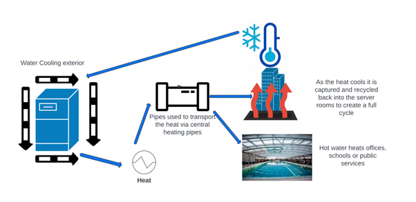

We are team HydroHeat.
Education has recently joined the global call to action to mitigate the impact of the environmental crisis. As students at Fulford school we want to be part of the answer. Developing sustainable scalable solutions which educate innovate and inspire the next generation to be self-sustaining.
The Problem
The move to cloud computing has been instrumental in reducing the carbon footprint of organisations and supporting the work towards net zero. The challenge facing smaller organisations /educational institutions is the prohibitive cost of replacing on premise solutions in an achievable way.
The Solution
Our solution is to create a sustainable source of heat that allows companies to simultaneously save money and help the environment. Our concept looks to wrap a water-cooling system around on premise servers to absorb the heat. This hot water could then be used to transfer the energy into buildings via their central heating system. The cooled water can then be recycled back into the server rooms completing the cycle
This has exponential possibilities as we can even extract energy using latent heat if we need to do so in the future. Reducing environmental impact and creating an eco-system that becomes self-sustaining.
